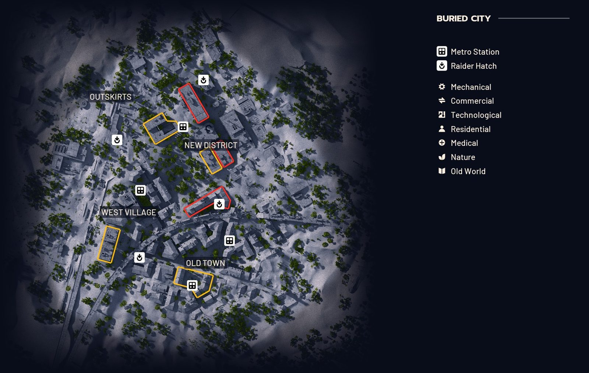

Narrow streets and empty plazas of a sand-covered ruin that was once a home for people.

Open the interactive mapAll of Arc Raiders Hub
The interactive map has a detailed, zoomable version with every room labelled, a key, a room finder and your own pins saved on your device.
Markers on the key: Metro Station, Raider Hatch.
Free fan-made reference, not affiliated with Embark Studios. Map data from the ARC Raiders Wiki (CC BY-SA 4.0).